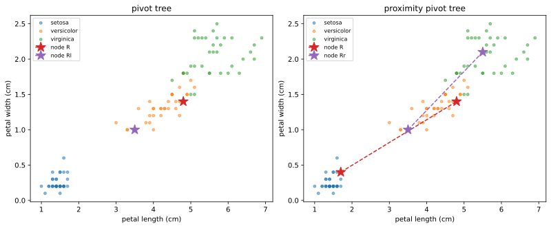
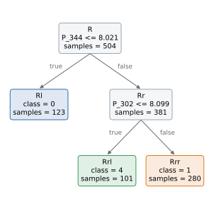
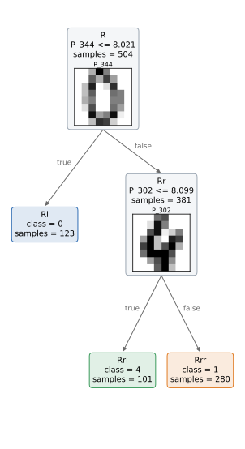
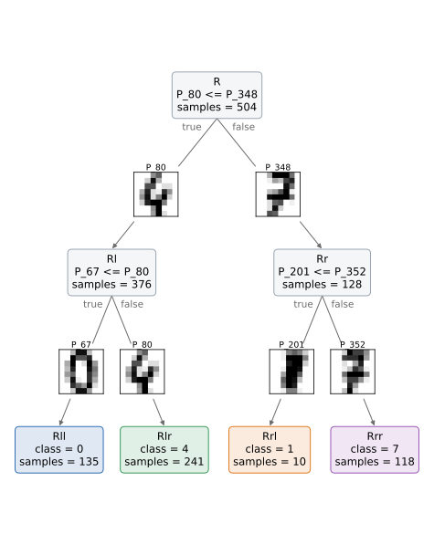
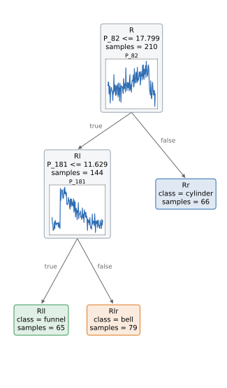
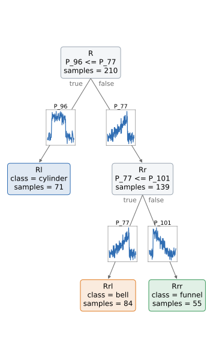
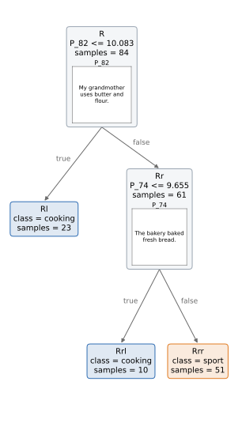
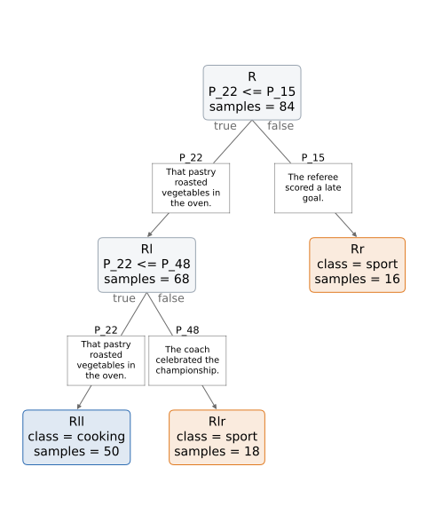

Pivot trees on different data types#
A pivot tree splits on the distance from pivots, instances of the training set, so its rules can be read by looking at the pivots themselves, whatever the data are. Two kinds of pivot splits are shown here:
PivotTreeStumpClassifier:P_a <= t, the instances closer thantto the pivotago left;ProximityPivotTreeStumpClassifier:P_a <= P_b, the instances closer to the pivotathan to the pivotbgo left, the others right. There is no threshold: each child is described by a pivot, usually of different classes.
The pivot stumps work on vectors: they take tabular data, and time series (X_ts) and images (X_img) flattened into one feature per value; with an embedder, they compare the embeddings of the instances instead, and take also texts (X_txt). The distances are computed on the standardized vectors (categorical features one-hot encoded).
The pivots of time series, images and texts are kept as given to fit: plot_tree draws the rules as text by default, and with show_media=True the pivots too, below the rule of their node or, for the proximity pivot stumps, on the arrows of the two children. All the trees here have depth 2.
import numpy as np
import matplotlib.pyplot as plt
from sklearn.metrics import accuracy_score
from sklearn.model_selection import train_test_split
from RuleTree import RuleTreeClassifier
from RuleTree.stumps.classification import PivotTreeStumpClassifier, ProximityPivotTreeStumpClassifier
def pivot_tree(stump, y_train, **data):
"""A tree of depth 2 with the given pivot stump, trained on the data given as in fit (X, X_ts, X_img)."""
return RuleTreeClassifier(max_depth=2, random_state=0, base_stumps=stump).fit(y=y_train, **data)
Tabular data#
The iris flowers: four measures of each flower. Here the pivots are drawn on two of the measures, with larger markers: a star for the pivot of each node of the pivot tree, and a dashed line joining the two pivots compared by each node of the proximity pivot tree.
from sklearn.datasets import load_iris
iris = load_iris()
X_train, X_test, y_train, y_test = train_test_split(iris.data, iris.target, test_size=0.3, stratify=iris.target,
random_state=0)
pivot_model = pivot_tree(PivotTreeStumpClassifier(), y_train, X=X_train)
proximity_model = pivot_tree(ProximityPivotTreeStumpClassifier(), y_train, X=X_train)
for name, model in [("pivot", pivot_model), ("proximity pivot", proximity_model)]:
print(f"{name} tree, accuracy {accuracy_score(y_test, model.predict(X_test)):.3f}")
model.print_rules(model.get_rules())
pivot tree, accuracy 0.844
|--- P_54 <= 2.985
| |--- P_50 <= 1.332
| | output: 1
| |--- P_50 > 1.332
| output: 2
|--- P_54 > 2.985
output: 0
proximity pivot tree, accuracy 0.822
|--- P_26 <= P_54
| output: 0
|--- P_26 > P_54
|--- P_9 <= P_50
| output: 2
|--- P_9 > P_50
output: 1
fig, axes = plt.subplots(1, 2, figsize=(11, 4.5), layout="constrained")
for ax, (title, model) in zip(axes, [("pivot tree", pivot_model), ("proximity pivot tree", proximity_model)]):
for label, name in enumerate(iris.target_names):
ax.scatter(*X_train[y_train == label][:, 2:].T, s=15, alpha=0.5, label=name)
for k, (node_id, node) in enumerate(model.get_predicates().items()):
used = node.stump.get_pivots()["used"]
pivots = X_train[used if isinstance(used, list) else [used], 2:]
ax.plot(*pivots.T, "--*", color=f"C{k + 3}", markersize=15, label=f"node {node_id}")
ax.set_title(title)
ax.set_xlabel(iris.feature_names[2])
ax.set_ylabel(iris.feature_names[3])
ax.legend(fontsize=8)
plt.show()

Images#
The handwritten digits of scikit-learn: images of 8 x 8 pixels, given as X_img (the pivot stumps flatten them into 64 values). A tree of depth 2 has at most four leaves, so the example keeps four digits. A pivot is an image, so a rule reads as “closer than t to this digit” or “closer to this digit than to that one”; plot_tree(show_media=True) draws the pivots as images.
from sklearn.datasets import load_digits
digits = load_digits()
four = np.isin(digits.target, [0, 1, 4, 7])
images = digits.images[four]
images_train, images_test, y_train, y_test = train_test_split(images, digits.target[four], test_size=0.3,
stratify=digits.target[four], random_state=0)
pivot_model = pivot_tree(PivotTreeStumpClassifier(), y_train, X_img=images_train)
print("pivot tree, accuracy:", round(accuracy_score(y_test, pivot_model.predict(X_img=images_test)), 3))
pivot_model.plot_tree() # the rules only, as text
plt.show()
pivot tree, accuracy: 0.718

pivot_model.plot_tree(show_media=True)
plt.show()

proximity_model = pivot_tree(ProximityPivotTreeStumpClassifier(), y_train, X_img=images_train)
print("proximity pivot tree, accuracy:", round(accuracy_score(y_test, proximity_model.predict(X_img=images_test)), 3))
proximity_model.plot_tree(show_media=True)
plt.show()
proximity pivot tree, accuracy: 0.727

Time series#
The Cylinder-Bell-Funnel data set (Saito, 1994), a classic synthetic benchmark of time series classification: each series is noise plus a plateau (cylinder), an increasing ramp (bell) or a decreasing ramp (funnel), starting and ending at random times. The series of 128 values are given as X_ts, of shape (series, signals, length), and a pivot is a whole series.
def cylinder_bell_funnel(n_per_class, length=128, seed=0):
"""The Cylinder-Bell-Funnel time series (Saito, 1994)."""
rng = np.random.default_rng(seed)
t = np.arange(length)
series, labels = [], []
for label in range(3):
for _ in range(n_per_class):
a = rng.integers(16, 32)
b = a + rng.integers(32, 96)
inside = (t >= a) & (t <= b)
shape = inside * [1.0, (t - a) / (b - a), (b - t) / (b - a)][label]
series.append((6 + rng.normal()) * shape + rng.normal(size=length))
labels.append(label)
return np.array(series), np.array(labels)
cbf_names = ["cylinder", "bell", "funnel"]
X_ts, y_ts = cylinder_bell_funnel(100)
X_train, X_test, y_train, y_test = train_test_split(X_ts[:, None, :], y_ts, test_size=0.3, stratify=y_ts,
random_state=0)
pivot_model = pivot_tree(PivotTreeStumpClassifier(), y_train, X_ts=X_train)
print("pivot tree, accuracy:", round(accuracy_score(y_test, pivot_model.predict(X_ts=X_test)), 3))
pivot_model.plot_tree(class_names=cbf_names, show_media=True)
plt.show()
pivot tree, accuracy: 0.844

proximity_model = pivot_tree(ProximityPivotTreeStumpClassifier(), y_train, X_ts=X_train)
print("proximity pivot tree, accuracy:", round(accuracy_score(y_test, proximity_model.predict(X_ts=X_test)), 3))
proximity_model.plot_tree(class_names=cbf_names, show_media=True)
plt.show()
proximity pivot tree, accuracy: 0.833

Texts#
Texts are given as X_txt to pivot stumps with an embedder. The paper embeds them with a sentence transformer (RuleTree.utils.embeddings.TextEmbedder, which needs the embeddings extra). To keep this example self-contained, the embedder here is scikit-learn’s HashingVectorizer, which is stateless: each sentence becomes the counts of its words, on a small corpus of sentences about two topics. The pivots are sentences of the training set, drawn by plot_tree(show_media=True).
rng = np.random.default_rng(0)
topics = {
"sport": (["The striker", "Our goalkeeper", "The coach", "The home team", "That runner", "The referee"],
["scored a late goal", "won the final match", "trained on the pitch", "lost the derby",
"broke the record at the stadium", "celebrated the championship"]),
"cooking": (["My grandmother", "The chef", "This recipe", "The bakery", "Our cook", "That pastry"],
["baked fresh bread", "needs garlic and olive oil", "simmered the tomato sauce",
"served a warm soup", "uses butter and flour", "roasted vegetables in the oven"]),
}
texts, text_labels = [], []
for topic, (subjects, predicates) in topics.items():
for _ in range(60):
texts.append(f"{rng.choice(subjects)} {rng.choice(predicates)}.")
text_labels.append(topic)
texts, text_labels = np.array(texts), np.array(text_labels)
texts_train, texts_test, y_train, y_test = train_test_split(texts, text_labels, test_size=0.3,
stratify=text_labels, random_state=0)
from sklearn.feature_extraction.text import HashingVectorizer
embedder = HashingVectorizer(n_features=256, alternate_sign=False) # the counts of the words, hashed
pivot_model = pivot_tree(PivotTreeStumpClassifier(embedder=embedder), y_train, X_txt=texts_train)
print("pivot tree, accuracy:", round(accuracy_score(y_test, pivot_model.predict(X_txt=texts_test)), 3))
pivot_model.plot_tree(show_media=True)
plt.show()
pivot tree, accuracy: 0.833

proximity_model = pivot_tree(ProximityPivotTreeStumpClassifier(embedder=embedder), y_train, X_txt=texts_train)
print("proximity pivot tree, accuracy:", round(accuracy_score(y_test, proximity_model.predict(X_txt=texts_test)), 3))
proximity_model.plot_tree(show_media=True)
plt.show()
proximity pivot tree, accuracy: 0.722

Reading a prediction#
The path of an instance is a sequence of comparisons with the pivots. Here, for a sentence of the test set, the two pivots compared by each node of the proximity pivot tree it crosses, and the side it goes to: towards the pivot it is closer to.
sentence = texts_test[:1]
print(repr(str(sentence[0])))
leaf = proximity_model.apply(X_txt=sentence)[0]
node = proximity_model.root
while not node.is_leaf():
closer, farther = (node.stump.transformer_.media_[pivot] for pivot in node.stump.get_pivots()["used"])
goes_left = leaf.startswith(node.node_id + "l")
if not goes_left:
closer, farther = farther, closer
print(f" node {node.node_id}: closer to {closer!r} than to {farther!r} -> {'left' if goes_left else 'right'}")
node = node.node_l if goes_left else node.node_r
print("prediction:", proximity_model.predict(X_txt=sentence)[0])
'The bakery served a warm soup.'
node R: closer to 'That pastry roasted vegetables in the oven.' than to 'The referee scored a late goal.' -> left
node Rl: closer to 'That pastry roasted vegetables in the oven.' than to 'The coach celebrated the championship.' -> left
prediction: cooking